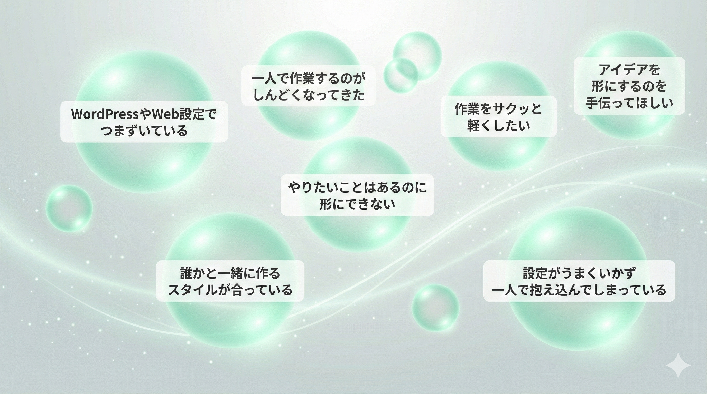

01
人の未来を、1ミリ軽くする。
困りごとを軽くすれば、人は前へ進める。
ツールでも、伴走でも、仕組みでも。
"軽さ"から、未来は動き出す。
SABO & Co が大切にしていること
困りごとを軽くすれば、人は前へ進める。
ツールでも、伴走でも、仕組みでも。
"軽さ"から、未来は動き出す。
完璧より、"まず形にすること"。
小さな実装が、大きな推進力になる。
気づいた瞬間を逃さず、未来の一歩をつくる。
安心は、創作と挑戦の土台。
相談しやすさ、寄り添う姿勢、やさしいスピード。
技術より先に"安心"を届ける。
—— 事業内容
あなたの"今すぐ解決したい"を、リアルタイムでいっしょに形にします。
画面共有・スクショ・対話を通じて、
詰まり・設定・バグ・アイデアの具現化までを伴走サポート。
一緒に作るから速い。
あなたの世界観・サービス・ストーリーを大切にしながら、
共創コーディングのスタイルで制作する"軽やかなホームページ"。
「いい感じにしたいけど、どうすれば？」という方に最適です。
日常の"面倒"や"繰り返し作業"を小さなWebツールとして形にするサービスです。

「こんなことできる？」からで大丈夫です。